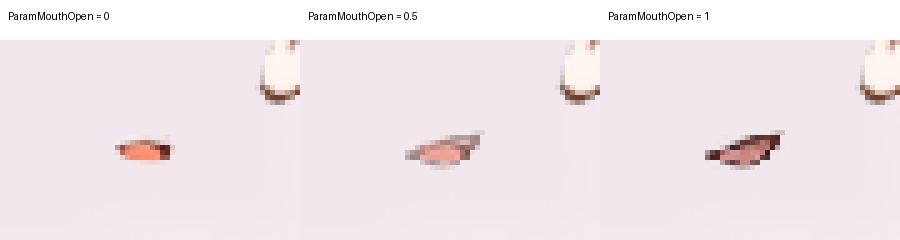

Three actual StandRig renderer frames from an unsaved in-memory candidate.
StandRig's import dry run and numeric QA passed. The live model was not replaced or modified. These frames test an opacity blend between two mouth images; they do not demonstrate continuous mesh deformation, lip sync or a completed rig.
The slider shows the three rendered values 0, 0.5 and 1. The play button cycles between these samples; it is not live StandRig playback.

The open shape is modest, but its outline reads slightly more like a smile. The halfway crossfade is softer and can look ghosted when enlarged. The small source mouth limits natural speech detail.
The trial used ParamMouthOpen to crossfade the original mouth and the new mouth image. StandRig reported validation and numeric QA passing for 0, 0.5 and 1, and the stored model revision remained unchanged. See the numerical results.
The mouth layer must still be imported and committed through StandRig's checkpoint and visual-target workflow before the live model can animate. There is no configured blink, speech input, or automatic lip sync in this trial.